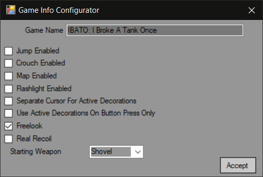

Game Info Configurator are available in "Game Settings".

Game Name - title for your game that will be shown when windowed.
Jump Enabled - enabling/disabling ability to jump.
Crouch Enabled - enabling/disabling ability to crouch.
Map Enabled - enabling/disabling activating mini-map by pressing Tab.
Flashlight Enabled - enabling/disabling ability to use flashlight.
Separate Cursor For Active Decorations - if enabled, will show "Pick" icon in place of crosshair when approaching a tile with terminal or decoration with attached script.
Use Active Decorations On Button Press Only - if enabled, everything (including weapons/ammo) will be picked by pressing Use button.
Freelok - enabling/disabling ability to use mouse to look up/down.
Real Recoil - if disabled, bullets will fly in the original camera direction, without taking actual recoil into account.
Starting Weapon - allows you to select any weapon to start first level with. Notice - you need to create at least one weapon.